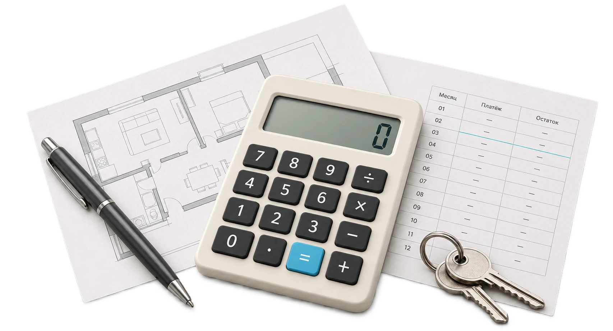
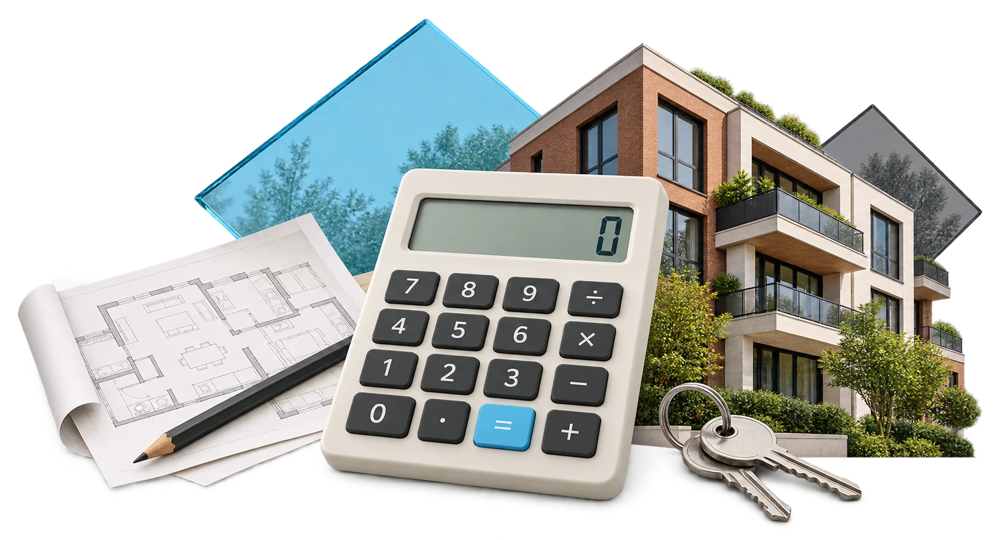

Ипотечный калькулятор
Понятный план.
Спокойная композиция.
Калькулятор лежит на чертеже и таблице ежемесячных платежей. Ручка и ключи завершают предметную сцену. Детали — в бумаге, металле, линиях документов и мягком свете.

Два слегка сдвинутых листа раскрывают чертёж и таблицу. Все предметы лежат на одной плоскости.


Те же материалы и предметы собраны ближе. Изображение вписывается целиком.

Широкая и компактная версии переключаются по доступной ширине карточки. Внешняя композиция блока, тексты и кнопка расчёта сохранены.
Предыдущая версия и причина изменения
Дом, зелень и стеклянные ромбы перегружали сцену. По замечанию пользователя они убраны; внимание возвращено к расчёту и документам.
